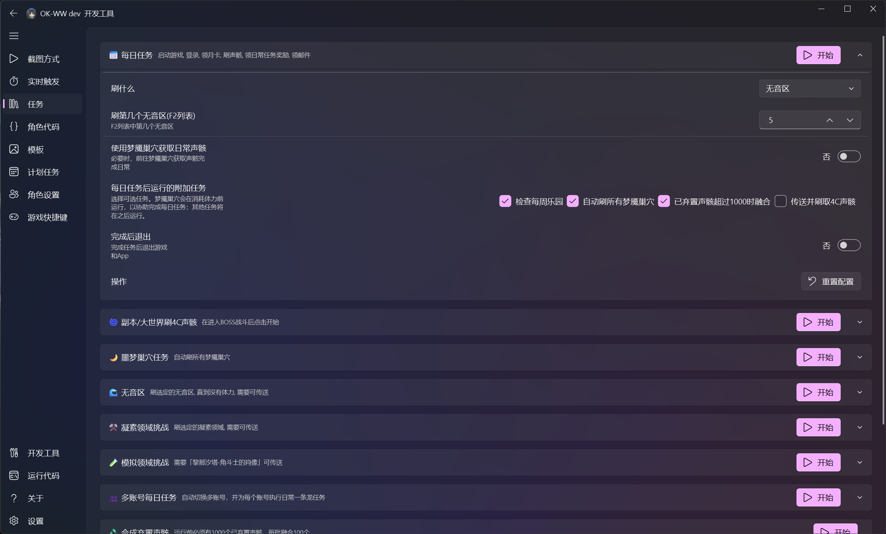
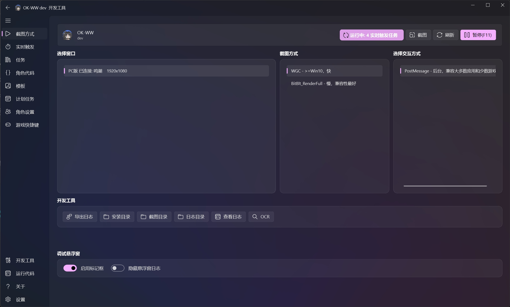
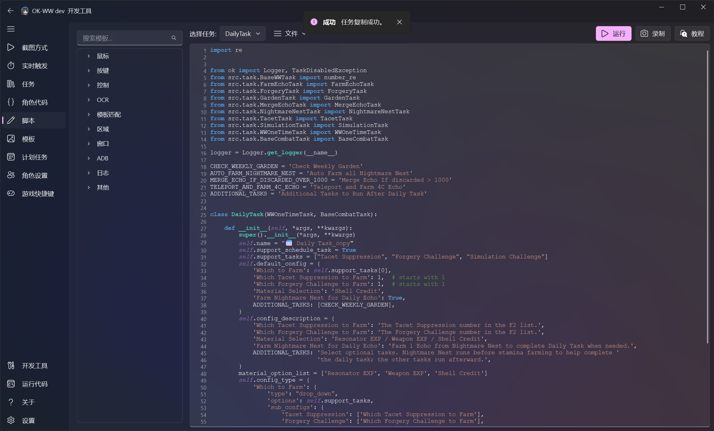
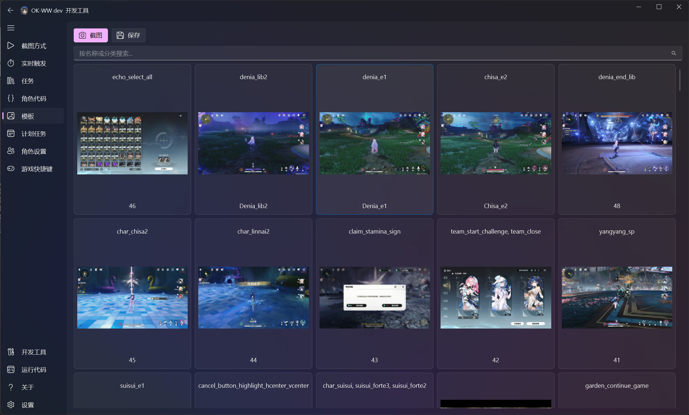

Interface and developer tools
简体中文 · Documentation · Quick start · API reference
ok-script brings task configuration, device connection, scripting, template management, and recognition debugging into one desktop interface. This page explains the tools shown in the current UI screenshots and how they fit together.
Configure and run tasks

The task page lists the one-time and composite tasks supplied by an application. Expand a task card to:
- change dropdown, numeric, toggle, and multi-select options;
- read help text for each option;
- start an individual task and inspect its state;
- reset the task configuration;
- collapse tasks that do not need editing.
Application developers create these controls with BaseTask.default_config, config_description, and config_type. Users can adjust runtime behavior without editing Python code.
Select capture and interaction backends

The capture page connects a target and selects the screen-capture and input backends:
- Connect a Windows game, emulator, or ADB device under the target list.
- Select a capture backend. WGC is generally fast, while BitBlt offers broader compatibility.
- Select an interaction backend, such as
PostMessagefor supported background input. - Use the screenshot and OCR developer tools to verify the captured image.
- Enable recognition boxes while debugging.
If capture works but input does not, check the interaction backend and administrator privileges. See the quick-start guide for setup details.
Browse scripts and APIs

The scripting page keeps task source and reusable API templates together:
- browse APIs by mouse, keyboard, OCR, template matching, ADB, and other categories;
- switch application tasks with the task selector;
- run or record scripts to validate a small automation sequence;
- insert common calls from templates to reduce typing errors.
The built-in editor is useful for inspection and quick experiments. Use PyCharm or VS Code with automated tests for larger changes.
Manage template assets

The template page presents COCO source screenshots and annotation categories as cards. It supports:
- capturing new source screenshots;
- searching by name or category;
- seeing which recognition features belong to each image;
- opening the annotation tool to adjust regions;
- saving optimized template assets.
Annotate at the highest resolution you plan to support. Choose stable, distinctive regions and exclude animated text. See Template matching with COCO assets for the complete workflow.
Inspect the debug overlay

The debug overlay draws recognition state over the captured frame:
- rectangles show search regions and matches;
- labels identify features and may show thresholds or confidence values;
- center guides help verify relative coordinates and screen regions;
- overlapping results reveal templates that are too broad, thresholds that are too low, or inaccurate search regions.
The overlay is a development and diagnostic aid. Production task logic must use values returned by APIs such as find_one, wait_feature, and ocr, not overlay state.
Recommended workflow
- Connect the target on the capture page and verify screenshots.
- Capture and annotate stable features on the template page.
- Implement the smallest recognition-and-click sequence in the script page or an IDE.
- Enable the debug overlay and inspect search regions and matches.
- Package stable behavior into a task and verify its configuration UI.
- Add regression tests with fixed screenshots before publishing a build.
 View source on GitHub ↗
View source on GitHub ↗